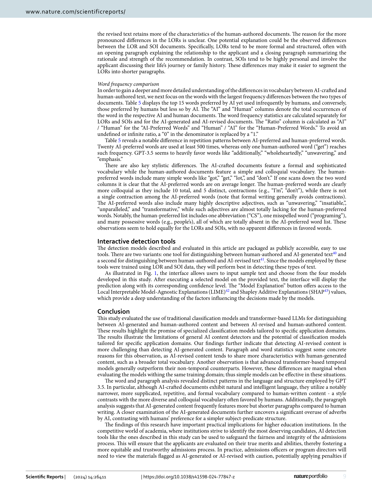

Figure 1
대학원 입학 서류(추천서/학업계획서)에 특화된 도메인 특정 AI 텍스트 탐지 모델이 범용 탐지기보다 훨씬 높은 정확도(99%+)를 달성할 수 있으며, AI 생성 텍스트와 AI 수정 텍스트 모두 효과적으로 식별 가능함을 실증한 연구.
도메인 특화 AI 텍스트 탐지의 실현 가능성을 설득력 있게 보여주는 실용적 연구이다. 3,755건의 LOR과 1,973건의 SOI라는 실제 입학 서류를 활용한 점, AI "수정" 텍스트까지 탐지 대상에 포함한 점, 크로스 도메인 실험으로 범용 탐지기의 한계를 명확히 보여준 점이 강점이다. 어휘 분석에서 드러난 AI의 "unwavering", "showcasing" 등 반복 패턴은 AI 텍스트의 특성을 직관적으로 이해하는 데 도움을 준다. 다만, GPT-3.5 단일 모델에 의존한 점은 빠르게 진화하는 LLM 생태계에서 결과의 시효성에 의문을 남긴다. GPT-4o, Claude 3.5 등 최신 모델은 인간과 더 유사한 텍스트를 생성하므로, 현재 수준의 탐지 정확도가 유지될지는 불확실하다. 또한 적대적 프롬프팅(탐지 회피를 의도한 프롬프트)에 대한 강건성 평가가 없다는 점이 실전 배포 시 우려된다.